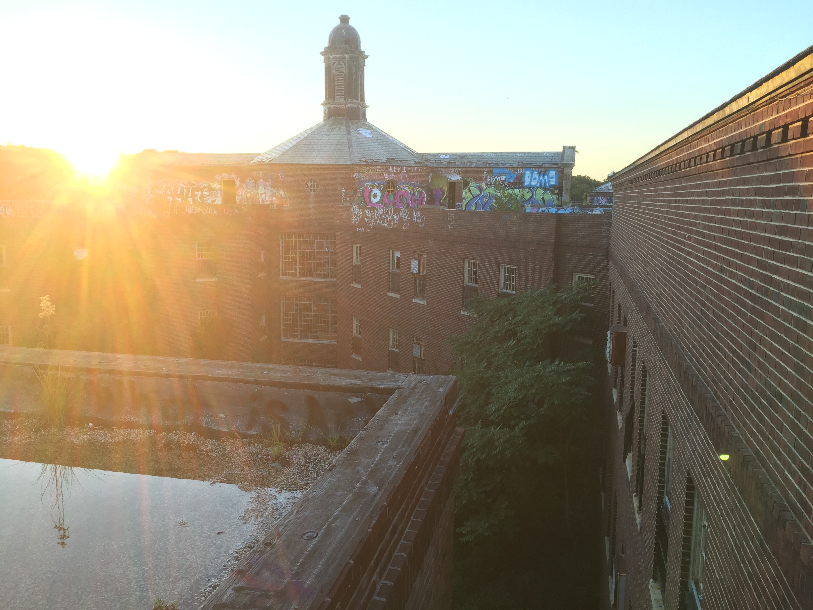

Featured Spot
Kings Park Psychiatric Center

This abandoned psychiatric center on Long Island, New York is an urban adventurer's dream come true. Kings Park operated for 111 years before being shut down in 1996. Medical advancements made it possible for psychiatric patients to lead functional lives outside of institutions. This lead to unoccupied space in the building, which ultimately resulted in the obsolescence of the asylum altogether. Having once been part of a larger psychiatric complex that included dozens of units, the 13-story high building stands out above the rest. Kings Park is a great spot for repeat-adventurers - there's always an unexplored hallway, room, or floor waiting for you on your next visit!